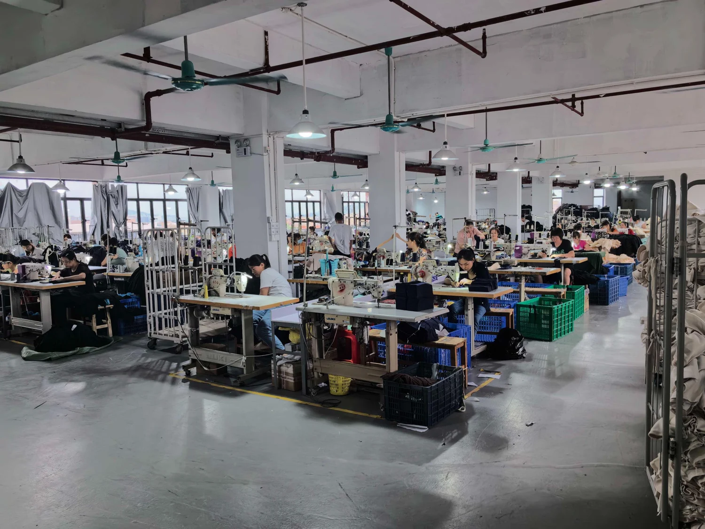
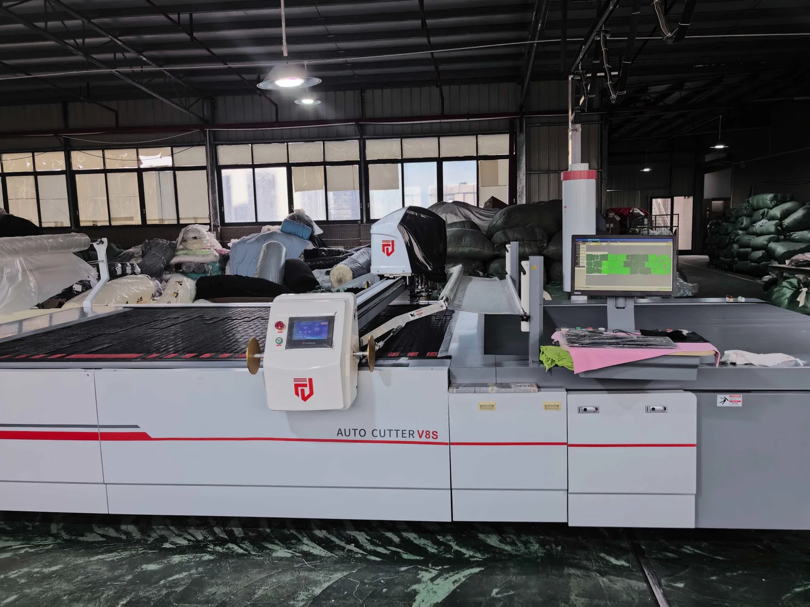
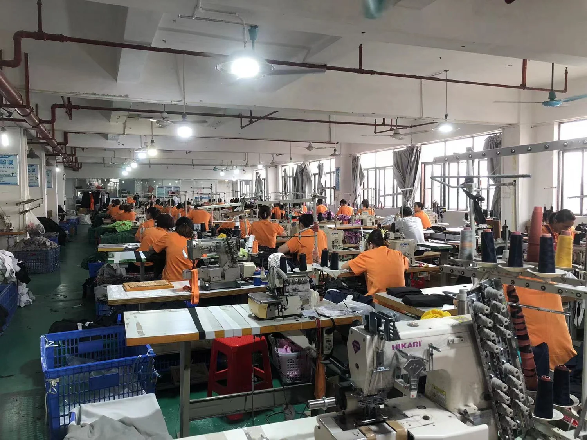
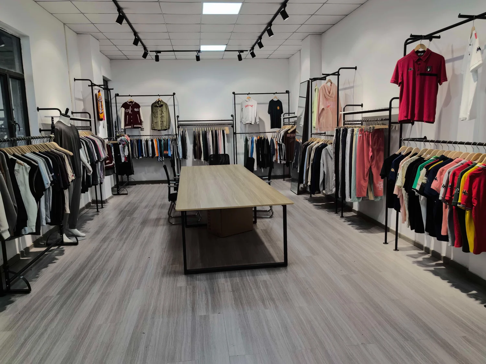

01 / CAPABILITY
Pattern & sample room
Translate references and technical specifications into patterns and physical samples. Review fit, measurements, construction and materials before production.
MANUFACTURING
Our Guangdong operation connects development, cutting, sewing and production coordination. Discuss the specific requirements of your product with our team.




01 / CAPABILITY
Translate references and technical specifications into patterns and physical samples. Review fit, measurements, construction and materials before production.
02 / CAPABILITY
Coordinate panel preparation against approved patterns, materials and quantities.
03 / CAPABILITY
Support everyday clothing, activewear and seasonal garments according to the approved sample.
04 / CAPABILITY
Coordinate artwork placement, screen printing, digital printing and embroidery.
QUALITY STARTS WITH THE BRIEF
Confirm materials, colour, measurements, workmanship and packaging before bulk production. Market-specific testing requirements should be agreed during project planning.
Start with a tech pack, sketch, reference or collection idea.
Review materials, patterns, fit and a physical sample.
Confirm the details before cutting, sewing and finishing.
Coordinate packaging, export documentation and freight.
LET’S MAKE SOMETHING TOGETHER
Bring a tech pack, a reference garment or an early idea. Let’s find the right starting point.
INSIDE XIANG KANG
Original factory photographs supplied for this website. The spaces and equipment are shown as photographed, without generated changes.
YARNS, FABRICS & MATERIALS
Discuss cotton yarns, fabric weights and constructions for everyday tops, toddler clothing and seasonal layers.
Explore blend composition and stretch requirements for activewear, fitted pieces and garments designed around movement.
Consider Polyester, nylon, lyocell and project-specific blends according to the design brief, season and target price.
Yarn, fibre content, weight, finish and any required testing are agreed per project. Material availability and specifications are confirmed during development.